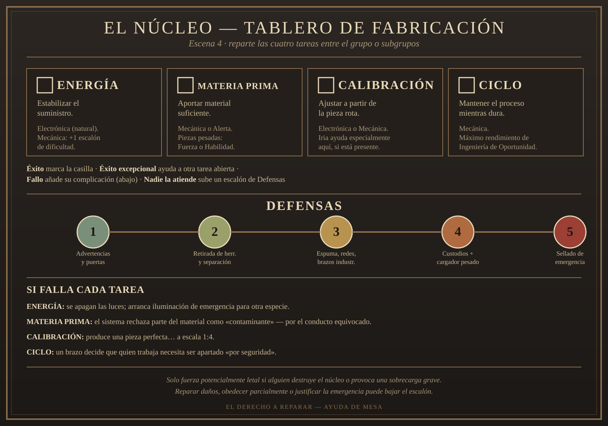
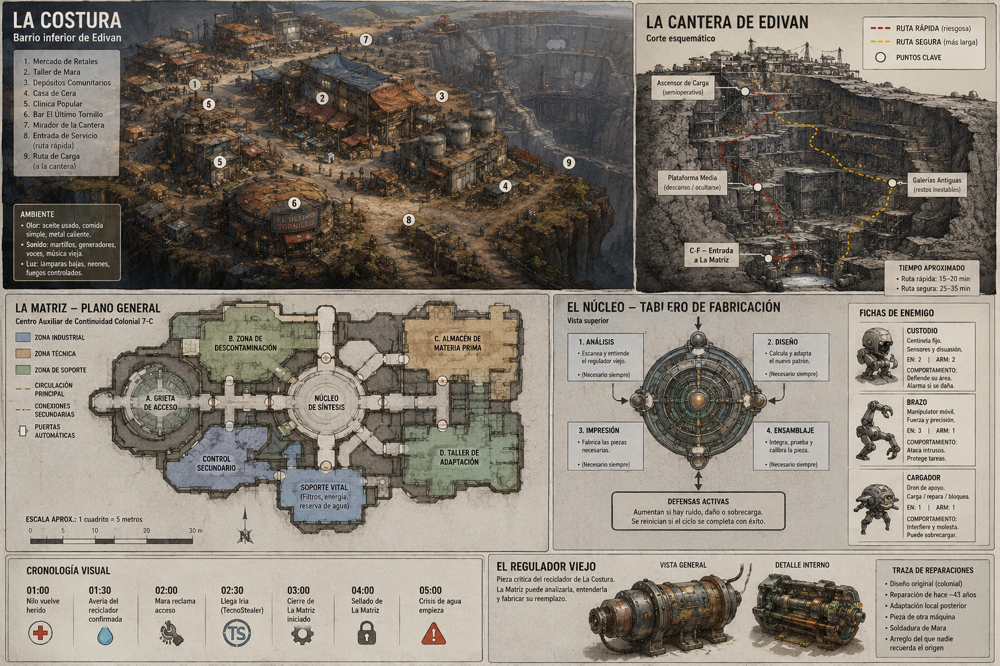
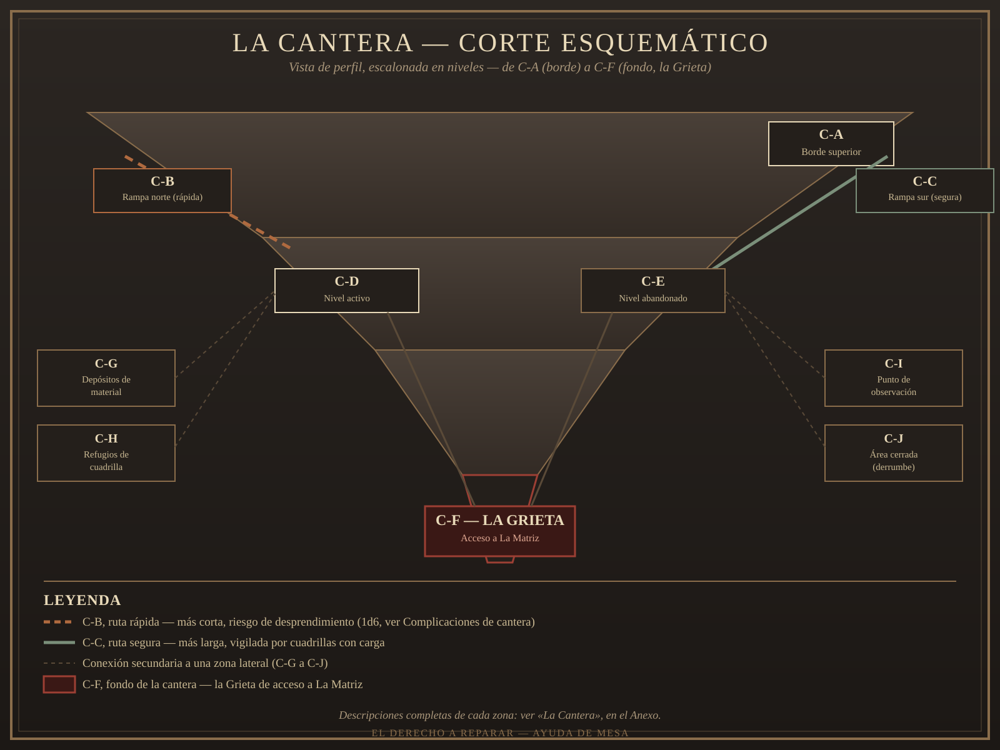

MÓDULO — El derecho a reparar
«Si está roto, nadie lo quiere. Cuando funciona, siempre tuvo dueño.»
Resumen operativo — léelo antes de dirigir
Premisa: un hundimiento reciente durante la reconstrucción de Edivan (Mundo Chatarra) ha dejado al descubierto una instalación civil olvidada bajo La Costura, un barrio inferior de la ciudad. La gente ya la llama La Matriz. Puede fabricar el repuesto que el reciclador de agua del barrio necesita con urgencia — pero también puede fabricar mucho más, y tres partes tienen motivos legítimos para reclamarla.
Duración: el hilo principal (las cinco escenas de "La aventura") se dirige en unas cuatro horas y admite hasta seis con conversación o combate adicional. Todo el Anexo — La Costura, la Cantera, los espacios sociales, las zonas de restos — es material de apoyo: úsalo tanto como la mesa quiera, no hace falta agotarlo en una sola sesión. También sirve como localización recurrente si el grupo vuelve a Edivan más adelante.
Número recomendado de PJ: de tres a cinco. Con grupos más grandes, reparte las cuatro tareas del clímax (Escena 4) entre subgrupos en vez de encadenarlas una a una.
Información pública: en La Costura todo el mundo sabe que Cera encontró algo grande bajo la grieta, que Nilo volvió herido y que el reciclador está fallando. Nadie oculta activamente nada — lo que no se sabe es qué hacer con el hallazgo, no que exista.
Verdad del Narrador: el incidente de Edivan fue un accidente defensivo, no un ataque; La Matriz es infraestructura civil colonial con límites reales, no una superarma ni un misterio cósmico; las tres reclamaciones (Mara, Cera, Iria) son legítimas y ninguna es una trampa (ver "Lo que ocurrió realmente", más abajo).
Si nadie interviene: el reciclador se detiene a la hora 05:00 y empieza una crisis local con reservas limitadas — no una catástrofe instantánea, pero sí un problema serio y creciente. La Matriz, sin nadie que la estabilice, completa su cierre y sella la cámara a la hora 04:00. Mara moviliza una cuadrilla de todos modos: el barrio no se queda de brazos cruzados esperando a los PJ.
Desarrollo en cinco escenas
- La Costura — Nilo vuelve herido; se confirma la avería del reciclador.
- Tres formas de tener razón — Mara, Cera e Iria exponen sus posiciones junto a la grieta.
- Una fábrica para gente muerta — recorrido condensado por la instalación.
- La primera pieza — clímax: fabricar el regulador mientras actúan las defensas.
- El derecho a reparar — negociación final entre las tres partes.
Panel del Narrador — léelo antes de sentarte a la mesa
Cronología clave: 01:00 Nilo herido → 01:30 avería confirmada → 02:00 Mara reclama acceso → 02:30 llega Iria → 03:00 cierre de La Matriz → 04:00 sellado → 05:00 crisis local.
Cómo avanza el tiempo de ficción: no lo simules minuto a minuto. Avanza el reloj cuando los PJ cambien de lugar, afronten un obstáculo, hagan una actividad prolongada o decidan conscientemente perder tiempo — no por cada línea de diálogo.
- Conversación breve, primeros auxilios, inspección rápida: 5-10 min.
- Desplazamiento dentro de La Costura: 5 min.
- La Costura → borde de la Cantera: 10 min.
- Descenso hasta C-F (la Grieta): 15 min por la ruta rápida (C-B) / 25 min por la ruta segura (C-C).
- Obstáculo de La Matriz (cada zona de la Escena 3): 10-15 min.
- Descanso, exploración lateral o negociación larga: 15-30 min.
- Cada ciclo incompleto de fabricación (Escena 4): 10 min.
Progresión orientativa (no obligatoria — ajusta si los PJ van más rápido o más lento):
| Hora | Qué ocurre |
|---|---|
| 01:00 | Empieza la Escena 1. |
| 01:20-01:30 | Parten hacia la Cantera. |
| 01:45-02:00 | Llegan al fondo; empieza la Escena 2. |
| 02:30 | Iria llega, sí o sí. |
| 02:45-03:00 | Entran en La Matriz (Escena 3). |
| 03:00 | Empieza el cierre mientras exploran. |
| 03:30 aprox. | Llegan al Núcleo (Escena 4). |
| 04:00 | Punto crítico. |
| 05:00 | El reciclador se para. |
Si los PJ llegan a la Cantera antes de las 02:30: Mara y Cera ya están discutiendo cuando llegan; Iria aparece durante la conversación, no antes — dale a su entrada un momento propio en vez de tenerla esperando desde el principio.
A las 03:00 / 03:30 / 04:00 / 05:00, si hay PJ dentro de La Matriz:
- 03:00 — Cierre iniciado. Aparecen advertencias; algunas rutas secundarias se cierran.
- 03:30 — Cierre avanzado. Sube un escalón en Defensas, o una vía queda bloqueada.
- 04:00 — Sellado. La Matriz deja de aceptar entradas e inicia una evacuación activa: si hay PJ dentro, intenta expulsarlos antes de sellar — coherente con su carácter civil, no los atrapa arbitrariamente.
- 05:00 — Reciclador parado. No cierra la aventura: empiezan las reservas. Mara pierde margen político (todo el mundo quiere la pieza ya), la negociación posterior se vuelve más tensa, se reparten raciones — pero el regulador sigue pudiendo fabricarse.
Las tres partes, en una frase:
- Mara → comunidad. Quiere el regulador y que La Costura no pierda acceso.
- Cera → reconocimiento. Quiere que se sepa que ella lo encontró, y no perder lo que arriesgó.
- Iria → TecnoStealer. Quiere prioridad técnica y presencia corporativa a cambio de ayuda real.
Objetivo inmediato: fabricar el regulador antes de que el reciclador falle.
Pregunta de fondo: ¿quién tiene derecho sobre una infraestructura necesaria para todos, cuando descubrimiento, necesidad y capacidad técnica pertenecen a personas distintas?
Estado de partida:
- Reciclador: inestable, fallará a la 05:00 sin intervención.
- La Matriz: abierta, cerrándose progresivamente.
- Cera: descubridora reconocida informalmente, sin garantías todavía.
- TecnoStealer: ya opera comercialmente en Edivan; Iria está en la ciudad y llegará a La Costura a las 02:30.
- Comunidad: movilizándose.
No hay villano. Nadie mintió, nadie robó. La violencia social solo aparece si alguien humilla, engaña, amenaza o excluye por completo a otra parte. No hace falta más trama que esta — nada de segundo giro, traición oculta ni supertecnología.
Lo que ocurrió realmente
Verdad completa
Durante la huida de la fragata de Thanos cerca de Edivan, sus explosiones no pretendían atacar nada: solo despejaban una vía de salida. Los sistemas defensivos automáticos de Edivan las interpretaron como una agresión y respondieron. El intercambio colapsó buena parte de la estructura de entonces. Edivan fue reconstruida sobre el mismo emplazamiento o muy cerca, conservando su función y su reputación — sigue siendo uno de los muchos lugares del Vertedero, no su capital.
Durante esa reconstrucción, uno de los nuevos hundimientos deja al descubierto una instalación civil, con nombre técnico parcialmente legible: Centro Auxiliar de Continuidad Colonial 7-C. La gente la llama La Matriz.
La Matriz mantenía viva una colonia aislada. Analizaba averías y fabricaba componentes intermedios: juntas y conectores, reguladores de presión, componentes para recicladores de agua, piezas básicas de prótesis, adaptadores entre tecnologías incompatibles, herramientas para anatomías o especies distintas. Necesita materia prima, energía, calibración y mantenimiento — no produce objetos terminados ilimitados ni tecnología arbitraria. No es un misterio cósmico ni una revelación sobre los Antiguos: es infraestructura civil colonial, con sus propios protocolos de continuidad.
La urgencia local es concreta y limitada: el reciclador de agua del barrio inferior está fallando y necesita una pieza que nadie en La Costura sabe fabricar. Hay reservas — no va a morir una ciudad al anochecer — pero empieza una crisis local si nadie la resuelve.
Qué saben los PJ y qué no
Los PJ pueden llegar a saber todo lo anterior a lo largo de la partida. Lo que no deben poder resolver desde el principio es quién tiene razón: eso se decide en la mesa, no en este documento.
Tono
Local, urgente sin ser catastrófico, con tres partes que se caen bien casi todo el tiempo aunque quieran cosas distintas. TecnoStealer, aquí, debe resultar atractiva: competente, seductora como opción profesional, capaz de combinar beneficio propio con una ayuda real. No es el villano por defecto, igual que tampoco lo son la comunidad ni los descubridores.
Cronología pública
El mundo sigue moviéndose aunque los PJ no intervengan. La partida empieza hacia la hora 01:00, con cada PJ ya en La Costura cuando Nilo vuelve herido.
| Hora | Suceso |
|---|---|
| 00:00 | Un nuevo hundimiento deja visible la entrada. |
| 00:30 | Cera entra y registra el descubrimiento. |
| 01:00 | Nilo intenta seguirla; una defensa lo hiere. |
| 01:30 | Se confirma que el reciclador fallará ese día. |
| 02:00 | Mara reclama acceso para fabricar el repuesto. |
| 02:30 | Iria, que ya estaba en Edivan por una visita de reconstrucción prevista, llega a La Costura. |
| 03:00 | La Matriz inicia su cierre y descontaminación. |
| 04:00 | Si nadie estabiliza el sistema, sella la cámara y purga los materiales preparados. |
| 05:00 | El reciclador se detiene y comienza una crisis local con reservas limitadas. |
No es una cuenta atrás para destruir Edivan — es presión local.
Síntomas del reciclador (para que el tiempo se vea, no solo se anuncie):
| Hora | Qué se nota |
|---|---|
| 01:00 | Vibración irregular, presión baja. |
| 02:00 | Algunos grifos escupen aire; el agua tarda en salir. |
| 03:00 | Mara ordena llenar depósitos auxiliares. |
| 04:00 | Presión mínima; algunas zonas dejan de recibir agua. |
| 05:00 | Parada completa. |
Volver a La Costura en cualquier momento debería dejar ver el síntoma correspondiente a esa hora, no solo un recordatorio verbal de "queda menos tiempo".
Cronología privada
Antecedentes (antes de la hora 0): Cera lleva semanas explorando los túneles de mantenimiento ampliados cerca de La Costura, buscando algo que vender — no sabía que había una instalación entera debajo. Mara lleva días luchando por mantener el reciclador funcionando con parches provisionales; sabía que fallaría pronto, no cuándo exactamente. Iria estaba ya en Edivan por una visita de reconstrucción rutinaria, sin relación previa con La Costura ni con el hallazgo.
Agravamiento, si nadie interviene (02:30-04:00): Mara moviliza más gente de la que la instalación puede procesar con calma, lo que aumenta el riesgo de que las Defensas escalen. Iria, al ver que nadie avanza, ofrece su ayuda de forma más insistente, sin llegar a imponerse. Cera empieza a sospechar que la comunidad la va a dejar fuera del reparto si no se mueve rápido.
Sucesos independientes (pueden ocurrir se metan o no los PJ): un comerciante empieza a vender «información privilegiada» sobre La Matriz que en realidad es rumor; dos cuadrillas de la Cantera discuten por un turno, sin relación con la trama principal, solo textura; si pasa mucho tiempo, Remache intenta colarse solo en la grieta por admiración a los recuperadores — alguien debería detenerlo antes de que se haga daño.
Oportunidades de resolver o desviar cada postura: hablar con Mara antes de la hora 02:00 evita que movilice una cuadrilla completa; ayudar a Cera a registrar el hallazgo formalmente antes de que Iria llegue cambia el tono de la negociación a su favor; aceptar hablar con Iria en privado (Lugar privado para hablar, en el Anexo) antes de la Escena 2 permite conocer los términos exactos del contrato sin la presión de las otras dos partes delante.
Qué cambia si los PJ llegan pronto o tarde: llegar antes de la hora 01:30 permite intervenir antes de que Nilo salga herido, o incluso acompañarlo. Llegar hacia la hora 03:00 significa que La Matriz ya ha empezado su cierre y la Escena 3 arranca con más presión de tiempo. Llegar después de la hora 04:00 significa que la cámara está sellada y hay que abrirla de nuevo antes de nada — una complicación añadida, no un fracaso automático.
No es un ferrocarril: estas oportunidades no tienen que aprovecharse en orden ni todas a la vez — son opciones que la mesa puede tomar o ignorar.
Reparto
Mara «Tresvueltas»
Maestra reparadora y portavoz circunstancial de La Costura. Directa, agotada, respetada, con humor seco. Jura que todo tornillo necesita «dos vueltas para cerrar y otra para convencerlo».
Aspecto: cincuentena quizá, brazos fuertes, manos castigadas, mono de trabajo remendado veinte veces, varias herramientas colgando sin orden aparente salvo para ella.
F35/A25/P45/V50 | PV 17/17/17 | Blindaje 0
Mecánica 75% | Electrónica 45% | Liderazgo 50% | Social 40%
- Teme que la urgencia acabe regalando un recurso generacional a quien no lo necesita.
- No atacará a Cera ni a Nilo, ni reclamará la instalación para sí misma.
- Sin PJ: reúne una cuadrilla y ocupa la entrada sin iniciar violencia.
Humor de Mara (reutilizable en cualquier escena donde aparezca — Escenas 1, 2, 4 y 5):
Ante una solución excesivamente complicada: «Eso funcionaría. También podríamos construir otro barrio.»
Si Iria saca una herramienta corporativa impecable: «Bonita.» / «Gracias.» / «No era un cumplido. Ahora quiero una.»
Si preguntan cuánto durará una reparación provisional: «Depende.» / «¿De qué?» / «De si preguntas antes o después de hacerla.»
Cera Vant
Recuperadora independiente, descubridora real del acceso, hermana mayor de Nilo. Llegó primero, dejó marcas verificables y no saqueó la instalación.
Aspecto: ligera, ropa de recuperación con demasiados bolsillos, raspaduras recientes y polvo de la grieta encima, mirada que comprueba las salidas antes que las personas.
F30/A45/P50/V40 | PV 18/18/18 | Blindaje 1
Sigilo 55% | Mecánica 50% | Alerta 60% | Social 35%
- Teme que la comunidad llame «solidaridad» a quedarse con el riesgo y el trabajo que fueron suyos.
- No destruirá La Matriz ni impedirá deliberadamente fabricar el regulador.
- Sin PJ: intenta registrarse como responsable de continuidad.
Iria Sorn
Ingeniera de recuperación y negociadora de TecnoStealer. Educada, competente, sin escolta visible. Su equipo debe dejar claro por qué alguien desearía trabajar para TecnoStealer, no solo temerla.
Aspecto: equipo impecablemente mantenido pero usado, no ceremonial; herramientas corporativas compactas y caras; habla tranquila incluso cuando discrepa.
F20/A30/P40/V45 | PV 13/13/13 | Blindaje 1
Electrónica 70% | Mecánica 55% | Social 60% | Programación 50%
- Exige control técnico inicial, prioridad de estudio y derecho a reclamar componentes que pueda demostrar como propiedad corporativa previa.
- No ordenará un asalto, no falsificará el contrato ni dejará deliberadamente sin agua a La Costura.
- El contrato es real y sus cláusulas incómodas no están escondidas, aunque Iria tampoco las destaca.
- Sin PJ: ayuda a fabricar el regulador y usa esa demostración para hacer atractivo su contrato.
Si la gramática estética de TecnoStealer ya está fijada, el equipo de Iria puede reflejarla en materiales, silueta y acabado — mientras conserva el negro, el gris, la plata y el mimeta ya aprobados. Son rasgos observables, nunca un nombre que ellos mismos usen.
Nilo Vant
Hermano menor de Cera, recuperador herido. Hablador, valiente, menos interesado que su hermana en poseer una fábrica.
PNJ funcional. F25/A40/P40/V35 | PV 16/16/16 | Blindaje 1 | Sigilo 40%
- Confirma que Cera llegó primero y volvió a pedir ayuda pudiendo haber ocultado el hallazgo.
- Admite en privado que aceptaría el dinero de TecnoStealer para dejar durante un tiempo la vida de recuperador.
Remache
Ayudante joven de taller. Conoce los túneles, admira a los recuperadores, trabaja para Mara. Su familia depende del reciclador. Es vínculo humano y apoyo — nunca salvador ni trama independiente.
PNJ funcional. Mecánica 30% | conoce cada atajo de los túneles de mantenimiento.
Qué hace en la aventura: si nadie lo invita expresamente a acompañar, Mara lo obliga a quedarse ayudando con las reservas de agua. Si acompaña, sirve de guía y ayudante — nunca sustituye una tirada importante de los PJ.
Quiere / ofrece / no aceptará
| Quiere | Ofrece | No aceptará | |
|---|---|---|---|
| Mara | acceso comunitario al regulador y a La Matriz | alojamiento, trabajo futuro, compensación para Cera y Nilo | entregar el recurso sin garantías para el barrio |
| Cera | reconocimiento público de su hallazgo | acceso y participación a quien la ayude a conservarlo | que llamen «solidaridad» a borrar su riesgo y su trabajo |
| Iria | prioridad técnica y presencia corporativa | dinero, estabilización, formación, producción reservada | trabajar sin obtener nada a cambio |
Relaciones para el Narrador
- Mara aprecia a Cera, pero rechaza que encontrar algo equivalga a decidir el futuro colectivo.
- Cera protege a Nilo.
- Nilo admira a Mara.
- Iria respeta profesionalmente a Mara y podría ofrecerle trabajo sin condescendencia.
- Iria considera legítimo el derecho inicial de Cera, no necesariamente la propiedad de toda la estructura.
- Cera necesita y a la vez teme la oferta de Iria.
- La Costura necesita la pieza de inmediato, no dentro de una semana.
Cómo se resuelve cada postura
Tres alternativas legítimas, sin que ninguna sea la correcta. Los PJ pueden apoyar una, combinarlas, abandonarlas, rechazarlas, o crear una cuarta solución razonable (ver Soluciones imprevistas, abajo).
| Postura | Se desarrolla en | Cambia si… | Sin intervención de los PJ | Continuación |
|---|---|---|---|---|
| Mara / La Costura | Escenas 1, 2, 4, 5 | acepta una firma compartida con Cera o Iria | ocupa la entrada sin violencia, pero tarda y arriesga más | mantenimiento futuro de La Matriz, u otra corporación interesada |
| Cera | Escenas 2, 3 (si guía), 5 | acepta el contrato de Iria con garantías, o cede el control a Mara si confía en no ser borrada | intenta registrarse como responsable por su cuenta, con resultado incierto | contacto recurrente, o relación que reparar si la ninguneraron |
| Iria / TecnoStealer | Escenas 2, 4, 5 | acepta un papel menor, o se retira sin sabotear nada | ayuda a fabricar el regulador de todos modos, y usa la demostración para vender su contrato | trabajo futuro para los PJ o Remache; nuevo interés si La Matriz revela algo más |
Sus resoluciones concretas están en Desenlaces compactos, más abajo; cada postura puede acabar en «Gestión comunitaria», «Derecho del descubridor», «Acuerdo TecnoStealer» o combinarse en «Consejo de varias firmas».
Soluciones imprevistas
Si el grupo propone algo que no está escrito aquí, evalúalo con estos siete ejes en vez de rechazarlo por no encajar en una postura:
- Objetivo: ¿qué intentan conseguir realmente?
- Recursos: ¿tienen con qué hacerlo (habilidad, equipo, tiempo, apoyo)?
- Información: ¿saben lo suficiente para que el plan tenga sentido?
- Tiempo: ¿la cronología permite que funcione antes de que algo cambie?
- Oposición: ¿alguien tiene motivos reales para impedirlo, y hasta dónde llegaría?
- Coste: ¿qué pierden o arriesgan al intentarlo?
- Consecuencias: ¿cómo afecta esto a los cuatro ejes del desenlace (ver Epílogo)?
No penalices la creatividad por apartarse de las tres posturas escritas — una cuarta solución razonable (fusionar dos ofertas, proponer un reparto por fases, involucrar a una cuarta parte) es tan válida como cualquiera de las tres, siempre que respete el canon: nadie mintió, nadie robó, y La Matriz sigue siendo infraestructura limitada, no una fuente mágica de soluciones.
Cómo entran los PJ
Sin exigir un patrón común: trabajan en la reconstrucción; conocen a Cera o a Nilo; han sido llamados por Mara; colaboran o viajan con Iria; son recuperadores interesados; pagan su estancia con jornadas de trabajo; o son forasteros aceptados como testigos neutrales. La partida arranca con cada PJ ya en La Costura cuando Nilo vuelve herido — sin necesidad de una contratación previa larga.
La aventura
Cada escena de aquí abajo está pensada para dirigirse sola, sin tener que buscar en otra parte del documento durante el juego — hasta las estadísticas de combate y las posturas de cada parte están repetidas dentro. El resto del documento (Reparto completo, La instalación, el Anexo) es para preparar antes o ampliar después, no para consultar a media escena.
Escena 1 — La Costura
Atmósfera:
Montañas de metal recortan el cielo antes que cualquier edificio. Entre ellas, La Costura se apoya en los restos como una costra sobre una herida vieja — módulos remachados, cables tendidos entre techos, humo de soldadura subiendo recto en el aire quieto.
Huele a aceite de cocina y metal caliente. Se oye el runrún constante del salón comunal y el chirrido de una grúa a lo lejos — hasta que llegan gritos: Nilo vuelve cojeando desde los túneles, cubierto de espuma endurecida y sangre seca, apoyado en quien lo encuentre primero.
Qué está ocurriendo: Nilo ha salido malherido de la grieta que Cera descubrió media hora antes. El reciclador, además, lleva días fallando y hoy da señales claras de que no aguantará mucho más.
PNJ presentes, con su intención inmediata:
- Mara «Tresvueltas» — al saber de Nilo, deja lo que hacía y organiza gente; quiere una respuesta antes de que cunda el pánico. Directa, agotada, humor seco (puede soltar una réplica de Humor de Mara, en Reparto).
- Nilo Vant — quiere que lo atiendan y que alguien vaya a ayudar a su hermana; habla más de la cuenta por el shock.
- Remache — ayudante de Mara, quiere sentirse útil; conoce cada atajo de los túneles.
- Cera no está presente al principio de la escena — sigue dentro. Mientras el grupo desciende hacia la grieta, Cera sale hasta la boca: ha comprendido que el lugar es demasiado grande para explorarlo sola y prefiere proteger su reclamación desde fuera antes que arriesgarse a quedar encerrada. Si los PJ llegan muy rápido, pueden encontrarla todavía saliendo.
Interpretar a Nilo (tres frases, para no improvisar en caliente):
«Primero me pidió identificación. Luego me desinfectó. Después intentó quitarme las botas. En ese orden.»
«Está bien. Creo. Cuando salí estaba discutiendo con una puerta. Iba ganando Cera.»
«Estoy tranquilo. Lo que no estoy es voluntariamente espumado.»
Qué saben / qué dicen: existe una grieta nueva con algo grande dentro; el reciclador está fallando y hoy es el día; Cera entró primero, dejó marcas y no ha vuelto a salir del todo. Nadie oculta nada — nadie sabe todavía qué hacer con el hallazgo.
Obstáculos y acontecimientos: Remache puede intentar colarse con el grupo hacia la grieta si nadie se lo impide. Usa, si hace falta, un acontecimiento de fondo menor sin relación con la trama: una disputa por raciones, alguien pidiendo indicaciones sobre un turno, una caja entregada al taller equivocado.
Tiradas posibles (ninguna obligatoria):
- Medicina (estabilizar a Nilo): éxito → puede acompañar al grupo después si quiere; fallo → sigue estable, pero no acompañará — no bloquea la aventura; éxito excepcional → además explica con precisión qué defensa lo alcanzó.
- Social o Alerta (captar el ambiente): éxito → notas que Mara está agotada, que Cera despierta simpatías en el barrio, y que ya existe miedo a que TecnoStealer se apropie del hallazgo; fallo → recibes impresiones contradictorias, sin más consecuencia.
Si los PJ no hacen nada: Mara organiza una cuadrilla y se dirige a la grieta por su cuenta.
Cómo termina: el grupo sabe que hay una grieta con algo grande dentro, que el reciclador falla, y decide moverse hacia ella — con o sin la cuadrilla de Mara.
Después: cómo trataron a Nilo y a Mara aquí condiciona el tono de la Escena 2. (Para ampliar el barrio — mercado, alojamientos, registro de derechos y el resto de espacios sociales — ver el Anexo.)
«Cera ha encontrado algo. Algo grande. Y la puerta no quiere que salgamos con ello.»
Escena 2 — Tres formas de tener razón
Atmósfera:
El suelo desaparece de golpe en un corte limpio de kilómetro y medio, escalonado en niveles como una herida abierta a propósito. Grúas se recortan contra el cielo en el borde superior. Muy abajo, figuras diminutas se mueven entre maquinaria que nunca deja de sonar.
Al fondo de ese corte, junto a una grieta reciente con luces improvisadas parpadeando alrededor, Mara, Cera e Iria esperan — cada una con su gente, ninguna con las armas fuera. Esto asume que llegan a las 02:30 o después, con Iria ya presente.
Si los PJ llegan antes de las 02:30: Iria todavía no está. Mara y Cera ya discuten junto a la grieta cuando el grupo llega, y la escena puede empezar solo con ellas dos. Dale a Iria una entrada propia cuando corresponda: una plataforma baja por la Cantera, o llega una pequeña unidad corporativa, e Iria desciende sola con una caja de herramientas que evidentemente cuesta más que medio taller de Mara. Mara la mira: «Bonita» — y a partir de ahí, la réplica de Humor de Mara que corresponda (ver Reparto).
Qué está ocurriendo: las tres partes se reúnen para decidir quién entra en La Matriz, con qué equipo y en representación de quién — todavía no la propiedad final.
PNJ presentes, con su intención inmediata:
- Mara: salvar el reciclador + acceso comunitario a La Matriz. Si apoyan a otra parte, insiste pero no ataca ni reclama la instalación para sí (puede soltar una réplica de Humor de Mara, en Reparto).
- Cera: reconocimiento de su hallazgo + participación en lo que se decida. Si la ignoran, se siente presionada a ceder de más; no sabotea nada.
- Iria: prioridad técnica a cambio de estabilización, dinero y formación para La Costura. Si la rechazan, no se impone — ayuda igual a fabricar el regulador y deja su oferta sobre la mesa.
- Nilo, si se recuperó a tiempo, apoya a Cera desde un lado.
Qué saben / qué dicen: los términos exactos de la oferta de Iria (estabilizar, pagar a Cera, formar a dos técnicos, reservar producción — a cambio de prioridad de estudio y derecho sobre componentes de propiedad corporativa previa); el estado real de las marcas de Cera, que confirman que no saqueó nada; la urgencia real de Mara.
Obstáculos y acontecimientos: alguien de fuera del grupo intenta forzar una decisión rápida; una complicación de cantera puede interrumpir la escena — tira 1d6: (1) desprendimiento menor, (2) una cuadrilla reclama el paso, (3) maquinaria vieja se enciende sola, (4-6) sin efecto, sigue la escena.
Tiradas posibles: Social o Liderazgo para calmar una discusión que sube de tono — ninguna es obligatoria para avanzar. Éxito → una parte acepta una concesión pequeña o baja la tensión un grado; fallo → nadie se vuelve enemigo, pero alguien exige una garantía adicional antes de seguir.
Si los PJ no hacen nada: Mara y Cera entran juntas; Iria acompaña como técnica.
Cómo termina: el grupo sabe qué quiere cada parte y se decide quién entra en La Matriz, con qué equipo y en representación de quién. No hace falta resolver aún la propiedad.
Después: las promesas hechas aquí se recuerdan en la Escena 5. (Fichas completas de Mara, Cera e Iria, con su tabla Quiere/Ofrece/No aceptará: ver Reparto.)
Escena 3 — Una fábrica para gente muerta
Atmósfera:
El cable tensa, el suelo se aleja, y de golpe la cantera entera se despliega como un mapa: niveles activos con cuadrillas en fila, niveles vacíos donde la maquinaria descansa oxidada, y al fondo, una sombra más oscura que el resto — la grieta.
Dentro, tras cruzarla: silencio distinto al de fuera, solo el crujido ocasional de metal asentándose y el zumbido bajo de sistemas que todavía funcionan. Formas reconocibles emergen entre la chatarra. Nadie ha tocado nada en mucho tiempo. O eso parece.
Primera impresión de La Matriz: tras la grieta desaparece la chatarra. Las paredes son paneles lisos de material claro, sin remaches, diseñados para desmontarse por secciones. Los corredores son demasiado anchos y las puertas demasiado altas para una instalación humana: algunas tienen accesos secundarios a distintas alturas. Parte de las luces siguen funcionando, encendiéndose delante del grupo y apagándose detrás. No parece abandonada; parece un taller que lleva demasiado tiempo esperando clientes.
Qué está ocurriendo: recorrido condensado por la instalación. Elige solo dos de las cuatro zonas siguientes antes de llegar al Núcleo — no hace falta agotarlas todas. Cada zona es, además de un obstáculo, un botón de tono — elige según lo que quieras subrayar en esta partida: Grieta = peligro físico; Descontaminación = ambientación y humor; Almacén = el dilema de Cera; Taller = tecnología y humor.
Ruta recomendada para primera partida: Descontaminación → Taller → Núcleo. Si quieres más peligro físico, sustituye Descontaminación por Grieta; si quieres subrayar la reclamación de Cera, sustituye Taller por Almacén.
- Grieta de acceso. Estructura inestable tras el hundimiento; capas de reconstrucción, sangre de Nilo, marcas de Cera, espuma endurecida. Asegúrala con cualquier método razonable antes de forzar el paso — si no, riesgo de derrumbe parcial y una herida.
- Descontaminación. Pide identidad y motivo de continuidad — armarios pensados para anatomías distintas, no es hostil por defecto. Si falla la identificación: cierra puertas, aplica niebla desinfectante inocua, intenta retirar el equipo y expulsa (no letal). Puede engañarse, forzarse, justificarse como emergencia o rodearse.
Mensajes de La Matriz (frases cortas del sistema, no una IA-personaje — úsalas dos o tres veces, no todas seguidas):
«Indique especie.» — si responden «Humano»: «Humano no constituye una especie suficientemente precisa para protocolo médico.»
«Motivo de acceso.» — ante una respuesta vaga: «Defina emergencia.»
Tras justificarla: «Emergencia aceptada. Quejas sobre tiempos de procesamiento pueden presentarse después de la emergencia.»
«Su equipo no figura en catálogo. Proceda con precaución o con paciencia.»
«Contacto biológico detectado. Continúe respirando con normalidad.»
«Protocolo de continuidad activo desde hace 300 ciclos. Gracias por su paciencia histórica.»
- Almacén de materia prima. Material suficiente para un único regulador, más objetos más valiosos (abrazaderas de memoria estructural, un cortador colonial de rescate). Las marcas del lugar demuestran que Cera los vio y no los tocó. Llevarse de más sin autorización puede dañar el material o tensar la relación con ella.
- Taller de adaptación. Brazos industriales y moldes que pueden confundir armas, prótesis o equipo con objetos que reparar — tensión o humor según el grupo. Aquí se analiza el regulador roto; dejar claro qué es cada objeto evita que un brazo industrial se active por error.
El regulador: un cuerpo cilíndrico del tamaño de un antebrazo, conexiones desiguales adaptadas durante décadas, la carcasa abierta y dos piezas internas literalmente rehechas a mano. Si La Matriz lo analiza, puede señalar en voz alta (uno de los mensajes de arriba sirve) capas de su propia historia — diseño original, una reparación de hace 43 años, una adaptación posterior, una pieza de otra máquina, una soldadura que Mara reconoce como suya, y otro arreglo del que ni ella recuerda el origen. No hace falta explicar nada más: la propia pieza cuenta de qué trata este módulo.
Errores razonables de mantenimiento (1d6):
1. Intenta afilar un arma que no debería afilarse.
2. Identifica una prótesis como «mantenimiento atrasado: 14.372 días».
3. Limpia compulsivamente una armadura.
4. Intenta retirar una modificación artesanal porque «pieza no homologada».
5. Ofrece sustituir una pieza querida del equipo por otra objetivamente mejor y estéticamente espantosa.
6. Escanea a un PJ y declara: «El equipo presenta signos de mantenimiento biológico insuficiente.»
PNJ presentes: quien haya entrado, más Iria si acompaña — ayuda activamente si se le permite.
Qué saben / qué dicen: la función civil de La Matriz se entiende por objetos, etiquetas y rutinas — no hace falta una exposición histórica.
Tiradas posibles: Mecánica o Electrónica para la mayoría de obstáculos; Sigilo o Social como alternativa según el enfoque del grupo.
Enemigos: ninguno fijo en estas cuatro zonas. Las Defensas (Custodios, Brazo industrial, Cargador) están detalladas en la Escena 4 y solo aparecen aquí si el grupo provoca una respuesta clara.
Si los PJ no hacen nada: Iria abre el acceso, pero la instalación clasifica al grupo como intruso e inicia el cierre.
Cómo termina: el grupo llega al Núcleo de fabricación con más o menos recursos, según cómo resolvió el recorrido — no hace falta agotar las cuatro zonas.
Después: cualquier daño causado aquí escala la respuesta de las Defensas en la Escena 4. (Tabla completa de las seis zonas de La Matriz, incluida Descontaminación y Custodia, con más detalle: ver La instalación, más abajo.)
Escena 4 — La primera pieza
Atmósfera: el Núcleo de fabricación zumba, listo, esperando cuatro cosas a la vez. En algún momento de la partida, quizá coincidiendo con esta escena, algo enorme puede pasar muy lejos (El Coloso, a distancia, en el Anexo) — sin relación con lo que ocurre aquí; si coincide, úsalo como telón de fondo, no como amenaza.
Qué está ocurriendo — el tablero de fabricación: cuatro tareas simultáneas, repartibles entre el grupo o subgrupos:

Ayuda de mesa para esta escena — imprímela o téngola a la vista mientras diriges el clímax.
ENERGÍA ☐ — estabilizar el suministro. Electrónica es lo natural aquí; con Mecánica, sube la dificultad un escalón.
MATERIA PRIMA ☐ — aportar material suficiente para el regulador. Mecánica o Alerta para seleccionar el material correcto; si hay que manipular piezas pesadas, Fuerza o Habilidad ayudan.
CALIBRACIÓN ☐ — ajustar la fabricación a partir de la pieza rota. Electrónica o Mecánica indistintamente; es la tarea donde Iria, si está presente, puede ayudar de forma más directa.
CICLO ☐ — mantener el proceso mientras dura. Mecánica; si falta una pieza o herramienta, es la tarea donde más rinde la Ingeniería de Oportunidad.
No hace falta repartir las cuatro por técnico — busca que cada PJ tenga algo útil que hacer, no solo quien lleve Mecánica o Electrónica alta.
Cada tarea se resuelve con la habilidad indicada arriba (Ingeniería de Oportunidad si falta algo, con riesgo de Manía en vez de un fallo limpio):
- Éxito: tarea asegurada — marca la casilla.
- Éxito excepcional: además, ayuda a otra tarea sin resolver.
- Fallo: la tarea sigue abierta y añade una complicación (ver abajo, una por tarea).
- Nadie la atiende: escala automáticamente — sube un escalón en Defensas.
Complicación si falla cada tarea (concreta, no genérica):
- ENERGÍA: se apagan las luces y arranca iluminación de emergencia pensada para otra especie.
- MATERIA PRIMA: el sistema rechaza parte del material como «contaminante» y lo devuelve cuidadosamente… por el conducto equivocado.
- CALIBRACIÓN: produce una pieza perfecta... a escala 1:4.
- CICLO: un brazo decide que quien está trabajando necesita ser apartado «por seguridad».
PNJ presentes: todo el grupo; Iria si sigue presente y no fue excluida.
Enemigos posibles — Defensas (fuerza fija, no crece con el número de PJ):
Custodio pequeño (×6, coordinados) — Blindaje 2 | Inmovilizar 40% (garra o descarga, Pen 1, no letal) | Daño 4 | PV 8/8/8. Prioriza advertir, seguir, separar e inmovilizar. Usa Ataque en grupo si actúan varios juntos.
Brazo industrial (×2, móviles) — Blindaje 3 | Sujetar o golpear 50% (Pen 2, no letal salvo mal uso) | Daño 8 | PV 15/15/15. Pensados para manipular piezas pesadas, no para matar; pueden aplastar por accidente si los provocan.
Cargador pesado (×1) — Blindaje 5 | Embestida o empuje 35% (Pen 3) | Daño 12 | PV 25/25/25. Lento y predecible; fácil de evitar en espacio abierto, peligroso en pasillos estrechos.
DEFENSAS: 1 → 2 → 3 → 4 → 5. Cada fallo o tarea desatendida sube un escalón: (1) advertencias y puertas; (2) retirada de herramientas y separación del grupo; (3) espuma, redes y brazos industriales; (4) custodios coordinados y cargador pesado; (5) sellado de emergencia y apagado del sector. Reparar daños causados, obedecer parcialmente o justificar la emergencia puede bajarlo. Solo se usa fuerza potencialmente letal si alguien destruye el núcleo o provoca una sobrecarga grave.
Si hay combate: aplica las reglas vigentes de máquinas y Ataque en grupo — no un sistema alternativo de enjambres. Vencer puede significar resistir, desactivar, encerrar, convencer o desviar; destruirlo todo es posible, pero daña el hallazgo y debilita la reclamación de quien lo intente.
Si los PJ no hacen nada: Mara intenta sacar adelante las cuatro tareas sin ayuda — tarda más y arriesga más frente a las Defensas.
Cómo termina: el regulador está fabricado (las cuatro casillas marcadas), o La Matriz queda apagada, dañada o abandonada — cualquier resultado cierra la escena, incluida una solución imprevista (ver Soluciones imprevistas, en Reparto).
Si fabrican el regulador — Control de custodia: antes de liberar el componente, el sistema pide registrar un responsable de continuidad: «Responsable de continuidad.» No decide quién es el propietario, solo pregunta — y de repente todos se miran entre sí. Puede registrarse Mara, Cera, Iria, varias firmas a la vez, o nadie (ver Control de custodia, en La instalación, para el detalle completo). Esta pregunta es, en la práctica, el primer momento de la Escena 5, aunque ocurra aquí.
Regreso con la pieza: el regulador terminado pesa unos 4 kg y puede transportarlo una sola persona, aunque resulta incómodo. Salir de La Matriz no exige nuevas tiradas salvo que las Defensas sigan activas. El ascenso hasta La Costura consume unos 20-25 minutos (ver Cómo avanza el tiempo de ficción, en el Panel). Mara puede instalarlo sin tirada si llega intacto; un PJ puede hacerlo con Mecánica si quiere asumir ese momento. Si fabricaron la pieza tarde (por ejemplo, pasadas las 04:45), el reloj vuelve a importar: correr hacia el reciclador antes de las 05:00 puede convertirse en la última decisión con presión real de la aventura.
Si La Matriz queda dañada, sellada o abandonada sin regulador: tres reacciones inmediatas, antes de pasar a la Escena 5 — Mara se derrumba un momento y luego empieza a organizar reservas de agua; Cera pregunta, muy seria, si alguien vio lo que había dentro antes de perderlo; Iria no reprocha nada en el momento, pero anota algo en su equipo sin decir el qué.
Después: el estado final de La Matriz (intacta, dañada, sellada) condiciona los desenlaces disponibles en la Escena 5.
Escena 5 — El derecho a reparar
Antes de negociar — el primer vaso de agua (unos cinco minutos, solo si consiguieron la pieza; sáltatelo si no): alguien instala el regulador. Silencio. El reciclador arranca. Una mujer abre un grifo. Sale agua. Mira a Mara.
—¿Ya puedo quejarme de cómo sabe?
Mara:
—Eso significará que funciona.
Deja que alguien traiga bebida o comida, que Nilo reaparezca, que la gente respire, antes de pasar a la negociación. No es relleno: convierte el salto directo de «clímax» a «debate sobre propiedad» en dos momentos distintos — hemos resuelto lo urgente y solo después ahora viene lo difícil.
Atmósfera:
Alguien que ayer no te miraba, hoy te saluda por tu nombre. Alguien que ayer confiaba, hoy pregunta dos veces antes de darte la espalda. La Costura ha decidido algo sobre ti, y ya no hace falta que lo digas en voz alta.
Qué está ocurriendo: negociación final entre las tres partes, con la emergencia inmediata ya atendida (si consiguieron la pieza). Cada una formula su oferta final:
- Comunidad (Mara) → acceso colectivo. La Costura administra La Matriz; Cera necesita reconocimiento y compensación creíbles o queda una injusticia pendiente.
- Cera → titularidad inicial. Conserva control y alquila servicios; Edivan juzga el precio y el acceso, no automáticamente su derecho a tenerlo.
- TecnoStealer (Iria) → soporte + prioridad técnica. Estabiliza, forma técnicos, paga — a cambio de presencia e información duraderas. Atractivo, con coste real.
- Consejo de varias firmas → responsabilidad compartida entre las tres, con reglas concretas de acceso y mantenimiento. El más equilibrado, no el más sencillo de dirigir.
- Matriz perdida → si quedó dañada, sellada o abandonada en la Escena 4, nadie controla nada todavía; el lugar queda como semilla para una vuelta posterior.
PNJ presentes: Mara (puede soltar una réplica de Humor de Mara, en Reparto), Cera, Iria, y cualquier PNJ relevante según lo ocurrido antes.
Obstáculos y acontecimientos: una de las partes se siente traicionada por una promesa incumplida en la Escena 2.
Tiradas posibles: Social o Liderazgo para inclinar la negociación; ninguna sustituye la decisión de la mesa.
Si los PJ no hacen nada: las tres partes llegan a un acuerdo mínimo por su cuenta, más frágil y menos favorable para todas que si los PJ median.
Cómo termina: las tres partes tienen una respuesta (acuerdo, ruptura o aplazamiento) y la tabla de abajo está rellenada:
| Eje | Resultado |
|---|---|
| Reciclador / La Costura | ___ |
| Cera y Nilo | ___ |
| TecnoStealer | ___ |
| La Matriz (estado y responsable registrado) | ___ |
Después: ver Cómo se resuelve cada postura, en Reparto, para continuaciones a más largo plazo. (Descripciones extendidas de los cinco marcos: ver Desenlaces compactos, en Decisión final.)
Textos para leer
Lecturas breves. No describen emociones ni decisiones de los PJ — léelas o parafraséalas cuando ayuden, no en cada ocasión.
Primera visión del asentamiento
Montañas de metal recortan el cielo antes que cualquier edificio. Entre ellas, La Costura se apoya en los restos como una costra sobre una herida vieja — módulos remachados, cables tendidos entre techos, humo de soldadura subiendo recto en el aire quieto. Alguien grita un precio. Alguien más lo rechaza. El generador local falla, alguien lo golpea en un punto exacto, y vuelve a arrancar.
Entrada al comedor
El calor llega antes que el olor a aceite de cocina. Mesas largas, bancos desiguales, un runrún de voces que no se detiene ni cuando la puerta se abre. En una esquina, alguien afina un instrumento hecho de tubería y cable. En otra, dos mesas discuten sin levantar la voz sobre quién tiene razón, la sátira o la piedra sostenida entre varios brazos.
Primera visión de la cantera
El suelo desaparece de golpe en un corte limpio de kilómetro y medio, escalonado en niveles como una herida abierta a propósito. Grúas se recortan contra el cielo en el borde superior. Muy abajo, figuras diminutas se mueven entre maquinaria que nunca deja de sonar. El viento trae polvo metálico y un eco que tarda en volver.
Descenso por grúa
El cable tensa, el suelo se aleja, y de golpe la cantera entera se despliega como un mapa: niveles activos con cuadrillas moviéndose en fila, niveles vacíos donde la maquinaria descansa oxidada, y al fondo, una sombra más oscura que el resto — la grieta reciente, con luces improvisadas parpadeando alrededor.
Entrada en restos
El silencio aquí es distinto: no hay maquinaria trabajando, solo el crujido ocasional de metal asentándose. Formas reconocibles emergen entre la chatarra — el casco de algo que voló una vez, una consola con la pantalla intacta, herramientas de una anatomía que no es humana. Nadie ha tocado nada en mucho tiempo. O eso parece.
Paso del Coloso
Primero es el sonido: no un rugido, sino su ausencia — el ruido de fondo de la cantera se apaga un instante, como si algo absorbiera el aire. Luego la vibración, suave al principio, después innegable. En el horizonte, algo enorme se mueve sin prisa, indiferente a todo lo que no esté directamente en su camino. La chatarra a su paso desaparece, tragada sin ruido de más.
Reputación ya cambiada
Alguien que ayer no te miraba, hoy te saluda por tu nombre. Alguien que ayer confiaba, hoy pregunta dos veces antes de darte la espalda. La Costura ha decidido algo sobre ti, y ya no hace falta que lo digas en voz alta.
Calma posterior
El reciclador zumba de nuevo, bajo y constante, un sonido que nadie había apreciado hasta que estuvo a punto de faltar. En el salón comunal, alguien brinda con algo fermentado local. En la cantera, las cuadrillas vuelven a su turno como si nada. La grieta sigue ahí, abierta, esperando a que alguien decida qué es exactamente lo que hay debajo.
Desenlaces
La Costura amanece distinta — no irreconocible, pero distinta. Lo que se decidió junto a la grieta ya circula de boca en boca, con más versiones de las que deberían caber en una sola noche.
La instalación — La Matriz
No son seis escenas obligatorias: son espacios que el grupo puede visitar, combinar o saltarse según lo que la mesa necesite.
| Zona | Problema | Qué descubre | Solución evidente | Alternativas | Fallar provoca |
|---|---|---|---|---|---|
| 1. Grieta de acceso | estructura inestable tras el hundimiento | sangre de Nilo, marcas de Cera, espuma endurecida, cableado improvisado | asegurar la estructura antes de forzar el paso | apuntalar, rodear, reforzar con cualquier método razonable | derrumbe parcial, posible herida |
| 2. Descontaminación | el sistema pide identidad, motivo de continuidad y evaluación biológica | armarios pensados para anatomías distintas — no es hostil por defecto | identificarse y justificar el motivo | engañar, forzar, alegar emergencia, rodear | cierra puertas, niebla desinfectante inocua, intenta retirar el equipo y expulsa — no letal |
| 3. Almacén de materia prima | acceso a material suficiente para un único regulador, y objetos más valiosos (abrazaderas de memoria estructural, un cortador colonial de rescate) | las marcas del lugar demuestran que Cera vio estos objetos y no tocó nada | tomar solo lo necesario con autorización o acuerdo | negociar, colarse, usar el material igualmente | material perdido o dañado, tensión con Cera |
| 4. Taller de adaptación | brazos industriales y moldes que pueden confundir equipo con objetos que reparar | cómo se analiza el regulador roto — tensión o humor según el grupo | dejar claro qué es cada objeto antes de que el sistema decida por su cuenta | técnica, social, física o furtiva, todas válidas | activa un brazo industrial por error |
| 5. Núcleo de fabricación | cuatro tareas simultáneas (ver El clímax — tablero) | capacidad real y límites de La Matriz | repartir las tareas entre el grupo | Ingeniería de Oportunidad si falta algo, con riesgo de Manía | retraso, escalada de Defensas |
| 6. Control de custodia | registros civiles y protocolos, no una inteligencia todopoderosa | quién puede quedar como responsable de continuidad: identidad, comunidad, residentes, autoridad de mantenimiento y destino previsto del primer componente | registrar identidad y comunidad — da responsabilidad y evidencia política, no propiedad mágica | firma compartida, identidad falsa, o no registrar a nadie | ninguna firma válida disponible para el desenlace |
El clímax — tablero de fabricación
(Ayuda de mesa imprimible con este mismo contenido: ver la imagen en Escena 4.)
Cuatro tareas simultáneas, repartibles entre el grupo o subgrupos:
ENERGÍA ☐ — estabilizar el suministro. Electrónica es lo natural; con Mecánica, un escalón más difícil.
MATERIA PRIMA ☐ — aportar material suficiente para el regulador. Mecánica o Alerta para seleccionar el material; Fuerza o Habilidad si hay que manipular piezas pesadas.
CALIBRACIÓN ☐ — ajustar la fabricación a partir de la pieza rota. Electrónica o Mecánica; Iria, si está presente, ayuda especialmente aquí.
CICLO ☐ — mantener el proceso mientras dura. Mecánica; la tarea donde más rinde la Ingeniería de Oportunidad si falta algo.
Cada tarea se resuelve con la habilidad indicada (Ingeniería de Oportunidad si falta algo, con el riesgo de Manía habitual en vez de un fallo limpio — no hace falta ninguna regla nueva):
- Éxito: la tarea queda asegurada — marca la casilla.
- Éxito excepcional: además, ayuda a otra tarea sin resolver — márcala también, o dale ventaja.
- Fallo: la tarea sigue abierta y añade una complicación.
- Nadie la atiende: la tarea escala automáticamente — sube un escalón en Defensas.
DEFENSAS: 1 → 2 → 3 → 4 → 5 (ver escalada abajo). Cada fallo o tarea desatendida sube un escalón; reparar daños causados, obedecer parcialmente o justificar la emergencia ante el sistema puede bajarlo.
La escena termina al fabricar el regulador (las cuatro casillas marcadas), al apagar, dañar o abandonar La Matriz, o mediante cualquier solución imprevista válida (ver Soluciones imprevistas, en Reparto).
Defensas
Fuerza fija — no crece con el número de PJ. Ajusta conducta, activación o recursos narrativos si hace falta, nunca el número de unidades.
Custodio pequeño (×6, coordinados)
Blindaje 2 | Inmovilizar 40% (garra o descarga, Pen 1, no letal) | Daño 4 | PV 8/8/8
Prioriza advertir, seguir, separar e inmovilizar. Trata varios custodios actuando juntos con la regla de Ataque en grupo si la escena lo pide.
Brazo industrial (×2, móviles, del taller)
Blindaje 3 | Sujetar o golpear 50% (Pen 2, no letal salvo mal uso deliberado) | Daño 8 | PV 15/15/15
Pensados para manipular piezas pesadas, no para matar. Pueden aplastar por accidente si alguien los provoca dentro del taller.
Cargador pesado (×1, lento, resistente)
Blindaje 5 | Embestida o empuje 35% (Pen 3) | Daño 12 | PV 25/25/25
Lento y predecible. Fácil de evitar en espacio abierto, peligroso en pasillos estrechos.
Escalada:
- Advertencias y puertas.
- Retirada de herramientas y separación del grupo.
- Espuma, redes y brazos industriales.
- Custodios coordinados y cargador pesado.
- Sellado de emergencia y apagado del sector.
Solo se usa fuerza potencialmente letal si alguien destruye el núcleo o provoca una sobrecarga grave. Si hay combate, aplica las reglas vigentes de máquinas y Ataque en grupo — no un sistema alternativo de enjambres. Vencer puede significar resistir, desactivar, encerrar, convencer o desviar; destruirlo todo es posible, pero daña el hallazgo y debilita la reclamación de quien lo intente.
Las Dos Voces

Las mismas dos corrientes, con material propio de La Costura — no hace falta que la pared se parezca a esta imagen punto por punto.
Dos obras preexistentes en paredes enfrentadas de La Costura, hechas con recursos locales — pintura industrial, plantillas, placas reparadas, fragmentos de carcasas.
Voz satírica: un operario repara una máquina mientras varias manos con sellos esperan para cobrar.
«Si está roto, nadie lo quiere. Cuando funciona, siempre tuvo dueño.»
Voz estoica y comunitaria: varias figuras sostienen juntas un engranaje enorme.
«Lo que mantiene viva a una comunidad pesa demasiado para una sola espalda.»
Nadie sabe con seguridad si cada obra es del artista original o de un imitador. Mara simpatiza con la segunda; Cera cita la primera; Iria explica que ambas simplifican el problema, y puede usar la segunda para defender el mantenimiento corporativo como algo útil. Ninguna de las dos revela la solución ni resuelve el reparto por sí sola.
Tras fabricar el regulador, La Matriz imprime en la propia pieza:
«Componente de continuidad. No destinado a intercambio especulativo durante una emergencia.»
Al salir, alguien ha escrito debajo:
«Entonces esperaremos a que termine la emergencia.»
No confirmes la autoría.
Decisión final
Desenlaces compactos
Cinco marcos combinables — no hace falta escribir veinte finales distintos.
Gestión comunitaria. La Costura administra La Matriz. Edivan gana capacidad de reparación; Cera debe recibir reconocimiento y una compensación creíble o queda una injusticia reputacional pendiente.
Derecho del descubridor. Cera conserva titularidad o control inicial y alquila servicios. Puede prosperar, asociarse o descubrir que poseer exige mantener. Edivan juzga el precio y el acceso, no automáticamente su derecho a tenerlo.
Acuerdo TecnoStealer. Iria estabiliza, forma técnicos y paga. La instalación funciona mejor y antes, pero TecnoStealer obtiene prioridad, información y presencia duradera. Es una opción atractiva con coste real, no una trampa secreta.
Consejo de varias firmas. Comunidad, descubridores y soporte técnico comparten responsabilidad con reglas concretas de acceso, producción y mantenimiento. Puede ser el acuerdo más equilibrado, no necesariamente el más sencillo de dirigir.
Matriz dañada, sellada o abandonada. El regulador quizá se salva, pero el recurso futuro se pierde o se aplaza. Nadie obtiene una victoria completa. El lugar puede quedar como semilla para una vuelta posterior, sin obligar a retomarla.
Epílogo — tabla de cierre
Rellénala al final de la sesión: es, literalmente, el epílogo.
| Eje | Resultado |
|---|---|
| Reciclador / La Costura | ___ |
| Cera y Nilo | ___ |
| TecnoStealer | ___ |
| La Matriz (estado y responsable registrado) | ___ |
Recompensa
La misión no debe dejar al grupo con pérdidas netas después de curación, medikits, munición, daños al equipo, transporte y preparación — cúbrelo antes de repartir nada más.
Recompensa económica local (coherente con la economía de trueque de Mundo Chatarra: no hay moneda universal aceptada de forma general en Edivan, así que trátalo como una cifra de referencia, no un pago automático en efectivo): entre 200 y 500 Plasticrédito por PJ si el reciclador queda reparado, entregados sobre todo en piezas, trabajo garantizado o crédito de trueque. Si Iria participa activamente en el desenlace, TecnoStealer puede añadir un pago adicional de 300-600 PC por su cuenta — no acumules varias recompensas completas por una sola resolución.
Beneficios alternativos (combínalos libremente, no hace falta entregarlos todos): reparaciones y mantenimiento garantizado para el equipo de los PJ; piezas concretas (Almacén de materia prima, Zonas de restos); acceso futuro limitado a La Matriz, si queda alguien registrado como responsable; alojamiento y comida en La Costura por un tiempo razonable; un favor comunitario concreto, cobrable más adelante; contacto directo con Iria y TecnoStealer; información sobre la Cantera, el incidente de Edivan, o el propio Coloso si lo observaron de cerca; reputación local, en Edivan o entre recuperadores del Vertedero.
REC y POT: REC mide historial y acceso — cuánto confía la gente de Edivan o de TecnoStealer en el grupo tras esto, y qué puertas se abren. POT mide capacidad aparente — lo que la gente cree que el grupo es capaz de hacer, útil para negociar encargos futuros más exigentes. Ninguno de los dos es una moneda ni determina automáticamente el pago: son contexto para futuros contratos, no una cifra que sumar al final de la sesión.
Ritmo objetivo
| Parte | Tiempo aproximado |
|---|---|
| La Costura y llegada de Nilo | 20–30 min |
| Reclamaciones | 30–40 min |
| Exploración condensada | 60–90 min |
| Fabricación y defensas | 45–60 min |
| Decisión final | 30–45 min |
| Epílogo | 10 min |
Dirigible en unas cuatro horas por el hilo principal; admite conversación o combate adicional hasta seis. Todo el Anexo es material de apoyo opcional, no parte del ritmo obligatorio.
Anexo — La Costura como caja de herramientas
Todo lo que sigue es sandbox: localización recurrente, textura y encuentros opcionales. No hace falta prepararlo entero para dirigir la aventura — úsalo tanto como la mesa quiera, antes, durante o después de las cinco escenas.
La Costura

El Vertedero a escala — La Costura es uno de estos muchos rincones, no un lugar aparte.
La Costura no es una capital rival ni un asentamiento aparte que compita con Edivan — es uno de sus barrios inferiores, crecido alrededor de antiguos túneles de mantenimiento y talleres durante la reconstrucción. Usa el generador de asentamientos de Mundo Chatarra; estos resultados quedan fijados para la partida, no hace falta tirarlos en mesa:
- Origen: túneles de mantenimiento antiguos, ampliados con el tiempo.
- Sustento: talleres y maestros de oficio.
- Energía: una pequeña red local entre módulos reconstruidos.
- Agua y alimento: reciclaje cerrado.
- Oficio dominante: reparación mecánica.
- Decisiones: dirige quien tenga más experiencia en el problema concreto, no una autoridad fija.
- Forasteros: se exige un intercambio claro antes de confiar.
- Problema de mantenimiento: una pieza comunitaria irremplazable está fallando — el reciclador.
- Peligro habitual: ninguno inmediato.
- Particularidad cultural: humor técnico sobre reparaciones imposibles.
- Interés corporativo: TecnoStealer, compradora puntual y discreta — hasta hoy.
- Obra callejera: dos obras de las Dos Voces se responden entre sí, sin resolverse.
- Acontecimiento actual: algo importante está roto y todavía no se ha reparado.
Un generador que solo arranca con un golpe periódico en el sitio exacto, una reparación provisional con doce años de antigüedad que nadie se atreve a tocar, y murales enfrentados en dos paredes que se miran — así es un día cualquiera en La Costura antes de que Nilo vuelva herido.
Mapa textual de La Costura

Mapa de La Costura — la numeración sigue exactamente la lista de abajo.
Numeración de referencia para dirigir, con o sin el mapa a la vista:
- Perímetro de llegadas — portón reforzado, primer contacto con forasteros.
- Salón comunal — comedor, vida social, rumores.
- Talleres — reparación diaria, Mara cuando no está en crisis.
- Mercado de piezas — compra, venta, turnos de cantera.
- Alojamientos — módulos prefabricados, descanso.
- Registro de contratos y derechos — oficina de acuerdos formales.
- Enfermería — donde llega Nilo herido.
- Grúas y plataformas — borde de la Cantera, transporte rápido.
- Apuestas, música y descanso — rincón informal, buena vista del horizonte.
- Depósitos — almacenaje de material recuperado.
- Lugar privado para hablar — sin gente, por diseño.
- Murales de las Dos Voces — dos paredes enfrentadas.
- Generador local — el que solo arranca a golpes.
- Acceso a la Cantera — rampas hacia los niveles C-A a C-J.
- Reciclador de agua averiado — el origen de la urgencia.
Los números 1-13 y 15 están dentro del propio barrio; el 14 conecta directamente con la Cantera, descrita a continuación. El mapa gráfico de arriba sigue esta numeración; si se actualiza más adelante, debe seguir haciéndolo, no sustituirla.
Espacios sociales
Cada espacio incluye primera impresión, gente habitual, actividad normal, recursos, conflicto cotidiano propio (sin relación necesaria con la trama) y cómo evoluciona durante la sesión.
1. Perímetro de llegadas
Primera impresión: portón reforzado hecho de placas de casco, con un cartel pintado a mano: «Aquí se paga con algo, no con promesas.»
Gente habitual: un par de vigilantes rotativos, viajeros de paso regateando la entrada.
Actividad normal: registro informal de quién entra, intercambio inicial (herramienta, información, turno de trabajo) antes de que confíen en un forastero.
Recursos: primer contacto con rumores frescos, tablón de anuncios con encargos sueltos.
Conflicto cotidiano: un viajero exige entrar sin pagar el peaje habitual.
Evolución en la sesión: tras el hundimiento hay más gente entrando y saliendo de lo normal — curiosos, compradores, y quien venga de parte de TecnoStealer.
2. Salón comunal
Primera impresión: mesas largas hechas de planchas soldadas, humo de aceite de cocina, ruido de conversación constante.
Gente habitual: trabajadores fuera de turno, Remache sirviendo mesas, un par de veteranos jugando a las cartas.
Actividad normal: comer, beber algo fermentado local, discutir reparaciones, apostar sobre casi cualquier cosa.
Recursos: comida, bebida, información de segunda mano, contactos.
Conflicto cotidiano: dos mesas discuten sobre si la Voz satírica o la Voz estoica tiene razón — sin llegar a las manos, casi nunca.
Evolución en la sesión: el hallazgo de Cera se convierte en el tema de todas las conversaciones; según avance la partida, el ambiente pasa de curiosidad a tensión o a celebración según lo que hagan los PJ.
Interacciones pequeñas (usa dos o tres, no todas a la vez): una mirada de reconocimiento por el equipo o la reputación de un PJ; una conversación interrumpida al acercarse; un rumor equivocado sobre lo que hay bajo la grieta; una invitación a sentarse; un rechazo educado; alguien vendiendo información que el grupo ya sabe; una broma sin relación con la trama sobre el generador que solo arranca a golpes.
3. Talleres
Primera impresión: chispas, olor a metal caliente, herramientas colgadas por tamaño en la pared.
Gente habitual: aprendices, un par de maestros de oficio, Mara cuando no está gestionando la crisis.
Actividad normal: reparación de encargos diarios, formación de aprendices, discusión técnica.
Recursos: herramientas prestables, piezas de repuesto comunes, consejo técnico (Mecánica/Electrónica).
Conflicto cotidiano: dos maestros discuten sobre el método correcto para una reparación imposible.
Evolución en la sesión: Mara se desplaza a la grieta en cuanto llega Nilo; los talleres quedan medio vacíos mientras dura la crisis.
4. Mercado de piezas
Primera impresión: puestos improvisados, piezas clasificadas por tamaño y estado, regateo constante.
Gente habitual: comerciantes locales, cazadores de gangas, algún viajero de paso.
Actividad normal: compra y venta de piezas, mapas parciales, rumores, turnos de trabajo y derechos de explotación en la Cantera.
Recursos: piezas comunes, información sobre la Cantera, precios variables según suministros recientes.
Conflicto cotidiano: un comerciante acusa a otro de vender una pieza defectuosa como buena.
Evolución en la sesión: los precios de piezas relacionadas con recicladores suben en cuanto se sabe de la avería — oferta y demanda, no malicia.
5. Alojamientos
Primera impresión: módulos prefabricados apilados, ropa tendida entre ellos, más gente de la que caben oficialmente.
Gente habitual: familias, trabajadores de turno, viajeros que pagan su estancia en jornadas.
Actividad normal: descanso, vida doméstica, negociación de espacio.
Recursos: un lugar donde dormir, tiempo de descanso entre escenas.
Conflicto cotidiano: dos familias discuten por el mismo módulo libre.
Evolución en la sesión: si los PJ necesitan refugio o tiempo muerto, aquí lo consiguen — a cambio de un favor pequeño si son forasteros.
6. Registro de contratos y derechos
Primera impresión: una oficina modesta con un archivador físico y un terminal viejo pero funcional.
Gente habitual: un escribano comunitario, quien venga a registrar un acuerdo.
Actividad normal: anotar quién tiene derecho a qué — turnos de cantera, reparaciones pendientes, deudas de trabajo.
Recursos: información sobre acuerdos previos, capacidad de registrar un nuevo derecho (incluida la firma de responsable de continuidad de La Matriz).
Conflicto cotidiano: un desacuerdo sobre un turno de cantera mal anotado.
Evolución en la sesión: se convierte en el lugar donde se formaliza el desenlace final si alguna de las partes quiere dejarlo por escrito.
7. Enfermería
Primera impresión: espacio pequeño pero limpio, más ordenado que el resto del barrio.
Gente habitual: la sanadora local, Nilo tras volver herido.
Actividad normal: tratar heridas de trabajo, enfermedades menores.
Recursos: Medicina, un lugar para curar heridas entre escenas.
Conflicto cotidiano: escasez de vendajes o medicamento tras una mala semana.
Evolución en la sesión: aquí es donde el grupo ve a Nilo por primera vez, herido y cubierto de espuma endurecida.
8. Grúas y plataformas
Primera impresión: estructuras de metal que suben hacia el borde de la Cantera, cables tensados, el chirrido constante de poleas.
Gente habitual: operarios de grúa, cuadrillas subiendo o bajando turnos.
Actividad normal: transporte de material entre La Costura y la Cantera.
Recursos: acceso rápido (aunque ruidoso) a la Cantera, punto de observación elevado.
Conflicto cotidiano: una grúa lleva días fallando y nadie quiere ser el siguiente en usarla.
Evolución en la sesión: es la ruta más rápida hacia la Cantera si el grupo la necesita, y el mejor punto para ver pasar al Coloso en la distancia.
9. Apuestas, música y descanso
Primera impresión: un rincón del salón comunal, o un espacio aparte según el tamaño del barrio — alguien siempre está tocando algo con piezas recicladas como instrumento.
Gente habitual: los mismos veteranos de las cartas, alguien afinando un instrumento imposible.
Actividad normal: apuestas sobre casi cualquier cosa, música improvisada, descanso genuino.
Recursos: ambiente, rumores sueltos, una pausa real para los PJ.
Conflicto cotidiano: una apuesta que nadie quiere pagar.
Evolución en la sesión: si el Coloso pasa durante la partida, este es el lugar donde la gente se reúne a verlo y apostar sobre su trayectoria (ver El Coloso, a distancia).
10. Depósitos
Primera impresión: contenedores reconvertidos, algunos con carteles de propiedad disputada.
Gente habitual: quien guarda algo que no quiere en casa.
Actividad normal: almacenaje de material recuperado, a la espera de venta o uso.
Recursos: material bruto, algún hallazgo olvidado si alguien busca.
Conflicto cotidiano: un depósito con propiedad poco clara.
Evolución en la sesión: puede servir para guardar algo que los PJ traigan de la Cantera o de La Matriz sin llamar la atención.
11. Lugar privado para hablar
Primera impresión: un rincón tranquilo — la parte trasera de un taller cerrado, o el borde menos transitado de la Cantera.
Gente habitual: nadie, por diseño.
Actividad normal: conversaciones que la gente no quiere tener en público.
Recursos: privacidad.
Conflicto cotidiano: ninguno — es precisamente el sitio donde no lo hay.
Evolución en la sesión: Mara, Cera o Iria pueden pedir hablar aquí con los PJ en algún momento de la Escena 2, lejos de las otras dos partes.
La Cantera
Una explotación abierta de aproximadamente 1,5 km de longitud por 800 m de anchura, escalonada en niveles, en cuyo fondo se abrió la Grieta que lleva a La Matriz. No es una cadena de tiradas: la mayor parte de su actividad ocurre igual si los PJ no hacen nada.

Diagrama esquemático, no ilustración — para ver de un vistazo la relación espacial entre rutas y niveles.
C-A. Borde superior. Grúas y plataformas de descarga, visible desde La Costura, el punto más ruidoso de toda la explotación.
C-B. Rampa norte. Parcial, transitable con cuidado — ruta rápida pero peligrosa: desprendimientos ocasionales (ver Complicaciones de cantera).
C-C. Rampa sur. Más larga, vigilada, usada por cuadrillas con carga — la ruta segura.
C-D. Nivel intermedio activo. Trabajadores actuales, maquinaria en uso, montacargas funcionando sin parar.
C-E. Nivel intermedio abandonado. Maquinaria parada, más peligroso, zona de restos variados (ver más abajo).
C-F. Fondo de la cantera. Profundidad máxima. Aquí está la Grieta de acceso a La Matriz, con luces improvisadas alrededor y las marcas de Cera todavía visibles.
C-G. Depósitos de material. Organizados por tipo; una sección permanece cerrada por disputa de propiedad antigua, sin relación con La Matriz.
C-H. Refugios de cuadrilla. Cabañas improvisadas donde descansan los trabajadores de turno largo.
C-I. Punto de observación. Un saliente natural, buena vista de toda la Cantera y, en días despejados, del horizonte por donde puede pasar el Coloso.
C-J. Área cerrada. Sellada tras un derrumbe antiguo. Rumores de algo interesante dentro, sin relación necesaria con La Matriz.
Actividad normal, con o sin PJ: cuadrillas trabajando por turnos, grúas moviendo carga, apuestas sobre quién saca más material, alguna disputa por derechos de explotación mal anotados — todo esto sigue ocurriendo se metan o no los personajes.
Complicaciones de cantera (1d6, para textura, no un peligro por escena obligatorio)
| d6 | Complicación |
|---|---|
| 1 | Desprendimiento menor en una rampa — Atletismo o Acrobacias para no perder el equilibrio; un fallo grave pasa a la víctima de Sano a Herido, o de Herido a Tullido si ya lo estaba (misma regla que un colapso de terreno). |
| 2 | Una cuadrilla reclama que el grupo está pisando su turno de explotación. |
| 3 | Maquinaria vieja se pone en marcha sola, o casi. |
| 4 | Alguien encuentra algo que no debería tocar sin permiso — de otra cuadrilla, de Mara, o de TecnoStealer. |
| 5 | Empieza a caer polvo metálico con el viento — visibilidad reducida un rato, nada grave. |
| 6 | Señal de proximidad del Coloso (ver El Coloso, a distancia) — normalmente sin consecuencias, corta el trabajo un momento. |
Zonas de restos
Restos 1 — El Casco Partido (C-E)
Apariencia: la mitad de un casco de transporte, hundido en ángulo, óxido y musgo metálico.
Historia previa: un transporte de suministros que se estrelló durante la reconstrucción de Edivan, nunca reclamado del todo.
Quién la conoce: los veteranos de la Cantera, aunque pocos han entrado del todo.
Hallazgos: componentes industriales reutilizables, y un compartimento con objetos personales de la tripulación — sentimentales, sin valor de mercado.
Riesgo: estructura inestable, puede colapsar con vibración o peso mal repartido.
Información: una placa identifica el transporte — puede conectar con algún PNJ si el Narrador quiere tirar ese hilo.
Si no se explora: sigue ahí, sin cambios, para una vuelta posterior.
Cambios posteriores: si se explora mal, puede colapsar del todo y sellarse.
Relación con las posturas: ninguna directa — textura y recompensa alternativa (los objetos sentimentales, si alguien en La Costura los reconoce).
Restos 2 — La Fila de Maquinaria Muerta (C-E)
Apariencia: media docena de máquinas de extracción, paradas en fila como si esperaran una orden que nunca llegó.
Historia previa: la cuadrilla que las abandonó no volvió — nadie sabe bien por qué.
Quién la conoce: los operarios actuales las evitan, dicen que «no gustan».
Hallazgos: piezas reparables abundantes; una de las máquinas guarda en su memoria interna el registro de la última orden que recibió.
Riesgo: bajo, salvo alguna trampa de seguridad residual todavía activa.
Información: el registro puede confirmar, o complicar, quién tenía derechos previos sobre esta sección.
Si no se explora: la maquinaria sigue oxidándose, sin urgencia.
Cambios posteriores: puede repararse y volver a producir si alguien invierte el tiempo — gancho para otra sesión.
Relación con las posturas: útil para Mara (piezas) o para quien busque evidencia sobre derechos de explotación previos.
Restos 3 — El Depósito Saqueado (C-G, sección cerrada)
Apariencia: estanterías vacías, cerraduras forzadas hace tiempo, polvo asentado sobre lo que queda.
Historia previa: alguien lo vació hace años, mucho antes del hallazgo de Cera — sin relación con La Matriz.
Quién la conoce: es de dominio público que está vacío; casi nadie pierde tiempo aquí.
Hallazgos: casi nada de valor — pero un objeto abandonado por descuido, aparentemente inútil, puede resultar clave para una Ingeniería de Oportunidad concreta más adelante.
Riesgo: ninguno real.
Información: ninguna relevante a la trama principal, deliberadamente.
Si no se explora: no cambia nada.
Cambios posteriores: ninguno.
Relación con las posturas: ninguna — sirve para que no todo lo que brilla sea importante.
Restos 4 — El Nido de Cables (C-F, cerca de la Grieta)
Apariencia: un amasijo de cableado industrial entrelazado con chatarra más reciente, parte de él todavía con corriente residual.
Historia previa: restos de la propia estructura colapsada durante el incidente de Edivan original — anterior a La Matriz misma.
Quién la conoce: Cera pasó cerca al explorar, pero no entró — no era su objetivo.
Hallazgos: tecnología mal comprendida — un componente que nadie en La Costura sabe identificar del todo.
Riesgo: descarga eléctrica residual si se manipula sin cuidado.
Información: confirma, si alguien lo estudia, que la estructura colapsada es más antigua que La Matriz — una capa más del incidente original.
Si no se explora: queda como curiosidad sin resolver.
Cambios posteriores: puede volverse peligroso si nadie lo desactiva y algo lo activa por accidente.
Relación con las posturas: puede interesar a Iria como dato técnico adicional, sin ser necesario para ninguna.
Restos 5 — El Altar de Chatarra (junto a C-A)
Apariencia: una pequeña estructura hecha de piezas colocadas con intención — no es basura, es un monumento improvisado.
Historia previa: alguien de La Costura lo construyó en memoria de un accidente de cantera anterior.
Quién la conoce: todo el barrio, aunque pocos hablan de ello con forasteros.
Hallazgos: ninguno material — es puramente social y de ambiente.
Riesgo: ninguno, salvo el social de tratarlo con poco respeto.
Información: puede revelar, si alguien pregunta, algo sobre la cultura de La Costura y su relación con el riesgo del trabajo.
Si no se explora: sigue ahí, sin cambios.
Cambios posteriores: puede ganar una pieza nueva si los PJ arriesgan algo real por el barrio.
Relación con las posturas: ninguna directa — refuerza el tono de frontera industrial con memoria propia.
El Coloso, a distancia
Durante la aventura, un Coloso —casi con certeza el del Arco VI, el único bien documentado: 78-82 metros, miles de toneladas, algo más de 2 km/h— pasa a más de 20 km del asentamiento, sin desviarse hacia La Costura. No viene a por los PJ. No es un jefe.
Señales (usa dos o tres, no todas a la vez): vibración leve en el suelo que hace temblar las herramientas colgadas; un cambio en el sonido ambiente, como si algo absorbiera el ruido de fondo; una nube de polvo lejana en el horizonte; la maquinaria de la Cantera se detiene un momento por instinto colectivo antes de retomar el trabajo.
Reacciones de la gente: los veteranos de La Costura siguen comiendo o trabajando sin inmutarse — lo han visto antes. Los recién llegados se alarman. En Apuestas, música y descanso empiezan las apuestas sobre su ruta exacta. Si el Coloso gira aunque sea ligeramente, el miedo es real durante un momento, hasta que queda claro que sigue de largo.
Qué pueden hacer los PJ: observar desde un punto de observación (C-I, o las Grúas y plataformas); asegurar maquinaria o proteger a alguien que entra en pánico; investigar por curiosidad; acercarse deliberadamente; aprovechar la interrupción para colarse donde no deberían o simplemente respirar; o ignorarlo del todo y seguir con lo suyo.
No inventes otra mecánica. Si alguien decide acercarse de verdad más allá de esta escena, usa el Contador de Vibración y las reglas de proximidad ya publicadas en Mundo Chatarra (El Vertedero), Punto 8 — esta escena no está pensada para terminar en combate ni en persecución. A más de 20 km, que el Coloso llegue a «notar» al grupo exige acumular mucho: trátalo como una posibilidad remota, no un peligro inminente.
Ayuda rápida adicional
Rumores en circulación (usa dos o tres, no todos): «Dicen que hay más de un regulador ahí abajo.» (falso, o no confirmado) · «TecnoStealer ya sabía lo que había antes que Cera.» (falso) · «El sistema de la instalación reconoce a quien entra.» (cierto, es el registro de continuidad) · «Alguien vio algo enorme moverse cerca de la cantera esta mañana.» (cierto, es el Coloso).
Acontecimientos cotidianos (para textura entre escenas, no misiones completas): una patrulla o cuadrilla pide indicaciones sobre un turno de cantera; alguien busca a un familiar que trabaja en un nivel abandonado; una caja de suministros entregada al taller equivocado; restos de una celebración pequeña de la noche anterior; una disputa menor por un derecho de explotación mal anotado; dos trabajadores discutiendo por raciones o por el turno de guardia.
Matriz de pistas:
| Fuente | Revela |
|---|---|
| Mara / talleres | urgencia del reciclador, estado técnico de La Costura |
| Cera / Nilo | cómo se descubrió la Grieta, qué vieron dentro, qué no tocaron |
| Iria / mercado de piezas | interés previo de TecnoStealer, términos reales del contrato |
| Registro de contratos y derechos | acuerdos previos, cómo formalizar un desenlace |
| Zonas de restos | textura, recursos alternativos, alguna pista suelta sin forzarla |
| La Matriz (Control de custodia) | registros civiles, protocolos, quién puede registrarse como responsable |
Estados del asentamiento: normal (antes del hundimiento) → en alerta (tras la avería confirmada) → movilizado (si Mara organiza una cuadrilla) → resuelto o en crisis (según el desenlace).
Mundo Chatarra (El Vertedero) — módulo ambientado en Edivan. Reutiliza el generador de asentamientos, la economía, el Contador de Vibración y las reglas de combate ya vigentes en el mundo de la Urdimbre; no introduce mecánicas nuevas.